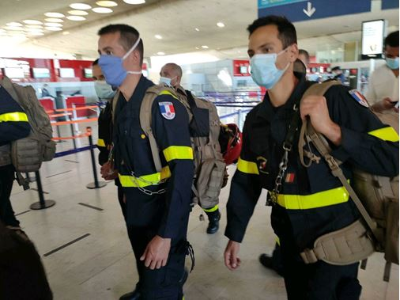
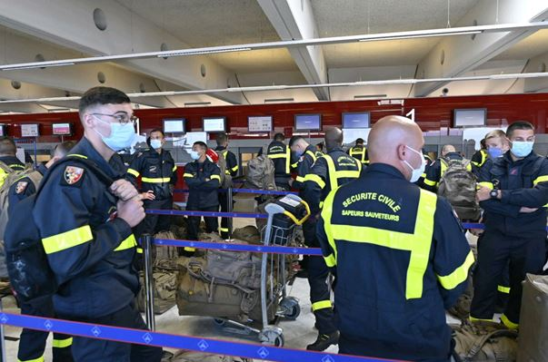
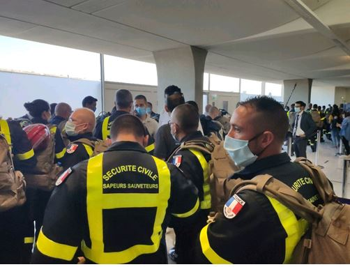

On 4 August 2020, the city of Beirut has experienced a devastating explosion, causing more than 100 deaths and 4,000 injured at the very least, according to reports by the Lebanese Red Cross. 200,000 inhabitants are left homeless and hundreds of individuals are still missing. The INSARAG network has immediately responded to the request from the Government and is currently deploying several INSARAG classified teams, such as the heavy FRA-2 team from France and Czech Team that deployed today in order to support search and rescue operations in Lebanon.
  